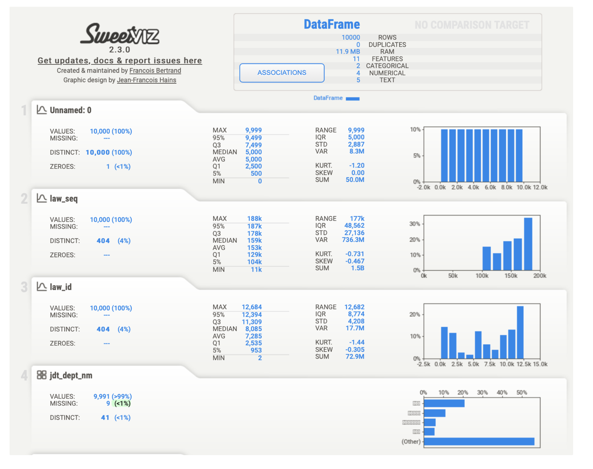
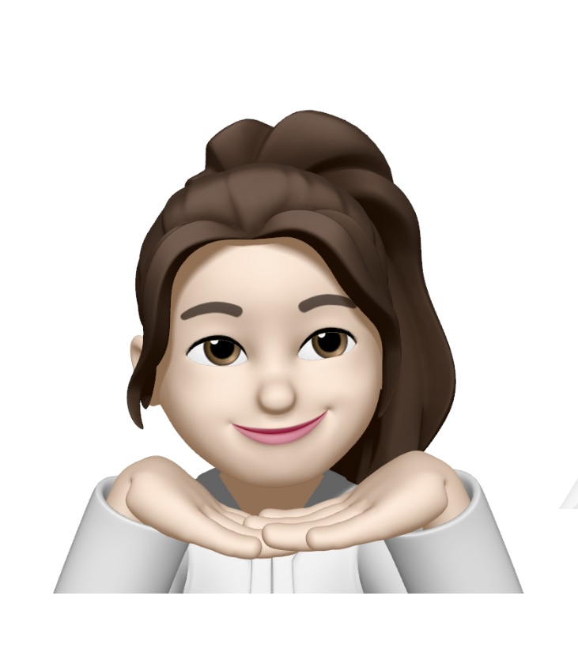

총평
사무유형을 분류하기 위해 전처리가 중요합니다.
1. 조사 전
조사전에 법령상 사무 총조사와 같은 선행 연구를 통해, 2010년과 2022년에 발간된 자료를 비교하며, 이러한 데이터의 주기적 업데이트와 개선이 이루어지고 있음을 알 수 있었습니다. Law.go.kr의 데이터만 업데이트하는 것이 아니라는 점이 인상깊었습니다. 판례나 약관이 아니라 법률 전문을 다룬다는 점이 복잡하면서도 많은 것을 배울 기회라고 생각합니다.
2. 조사 과정
법률 데이터는 단순한 체계가 아니기 때문에 분석이 필요하다고 생각했습니다. Python, pandas를 통해 csv파일을 열고, sweetviz, datatrep으로 eda를 해봤습니다.
처음에는 349,809개에 이르는 대규모 데이터 세트를 처음 다루는 과정에서, CSV 파일이 열리지 않는 문제가 발생했습니다. 이는 마지막 줄의 중복과 일부 오타 때문인 것으로 추정됩니다. 이를 해결하기 위해 코드를 수정하고 Jupyter와 Pandas를 활용하여 데이터프레임(df)을 검토하였습니다. 데이터를 점진적으로 늘려가며 20개, 150개, 마지막 행 등을 확인했고, 총 11개의 피처 중 4개가 수치형(numeric), 7개가 범주형(categorical)으로 분석했습니다.
EDA를 해봤을 때는, 주요 분류로 Overview,Variables, Interaction, Correlations, Missing Values를 보았습니다. Interactions의 경우는 x,y의 값을 다르게해서 그래프를 볼 수 있는데 유의미한 관계는 나타나지 않았습니다. 주요 컬럼으로는 ‘law_kor_nm’(법률명), ‘provision_no_nm’(조문 번호명), ‘clause_no’(항 번호), ‘provision_ttle’(조문 제목), ‘provision_cont_caluse_cont’(조문 내용) 등을 중점적으로 살펴보았습니다.
2.1 사무여부
이진데이터이기때문에 pandas를 통한 인코딩, 조건부 로직을 사용하면 될 것을 생각했습니다.
2.2 사무명
프로젝트를 받을 당시에 text summarization, KoBart를 통해 사무명을 요약추출해서 자동화하는 것이 가능하다는 생각을 했습니다. 한국어이고 법률 특성상 23조에서 ’15조에 따르면’과 같은 방식으로 선행 조항으로 가야할 경우가 많기 때문에 bi-encoder가 필요하다고 생각했습니다.
2.3 사무유형
가장 중요한 분류라고 생각합니다.
사무유형을 판별하기 전에 법률이므로 전처리가 중요하다고 생각합니다. 임의적으로 결측치를 대체하거나 제거하면 문제가 발생할 것입니다. Nan값을 갖는 경우에 어떻게 처리를 할것인지에 대한 논의 즉, 항과 호가 선택적으로 있는 조가 많기 때문에 이에 대한 합의가 필요하다고 생각했습니다.
3. 조사 후
이번 프로젝트를 통해서 법률명, 조문 제목, 사무 명, 사무 유형 등의 핵심 키워드를 검색할 때 최신 개정사항을 반영하는 시스템 구축을 최종적으로 시연하는 것이 목표입니다. KoAlpaca 모델에 법률 데이터를 학습시켜 LoRA finetuning, 혹은 NER을 이용해보면 좋다고 생각합니다.
Writer : 고유정
